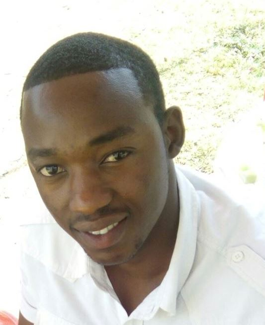

Home

My name is Dickson Muli. I was born and raised in Kenya,
D.C. but moved here to Cardiff thirty years ago with my family. I have dedicated my life to helping
others. For 35 years I was a professional nurse at the county hospital. I began my career as a
nurse in the Second World War, and also assisted soldiers injured in Korea, Vietnam, and here at home.
For the last decade, I have been a school nurse, and now I live with my son, his wife and their two children.
It has been a beautiful life.
I settled on nursing because taking care of the soldiers seemed so natural to me. I met my husband on the
battlefield.My children were born the year we ended the war and declared peace. What else could I have done?
This life of service found me.
One of the most interesting things has been meeting people in all the countries I’ve visited. In times
of distress, you really see how tight each community becomes. If someone is in the water, they’re plucked out.
If someone is injured, they’re bandaged. There are no questions, just action. I’d love to see that kind of
community support all over the world. Not just during times of war and disaster, but in everyday life.
The villages that support each other are the villages that succeed. In this giant village of Britain,
it’s vital that we remember that our responsibilities lie not just with ourselves, but also with our neighbors.
Our liberation is bound to the liberation of others.
I’d like to think I’ve done my part, been as useful as possible, and given to the best of my abilities.
For now, I’d like to continue mentoring young nurses and enjoying my time with family and friends.
Education
This is the education part
Job
This is the job part
Interests
After the first portrait I drew in my high school art class, I became captivated with
the challenge of photorealistic drawing and the meticulous attention to detail that it required.
The labor-intensive commitment to photorealism caused me to feel driven to continue improving
my technique. In college I spent a majority of my free time drawing portraits with colored pencil.
Being in the age of growing social media platforms, I decided to share my lengthy process online
through time-lapse videos. I began drawing and filming portraits of people that a broad audience
would be familiar with, including celebrities, athletes, and public figures. To my surprise,
my work began to attract a large audience, with videos surpassing 1 million views.
Along with my studies as an art student, I continued doing this throughout my college career.
This generated a large global audience for my work, with over 1 million subscribers.